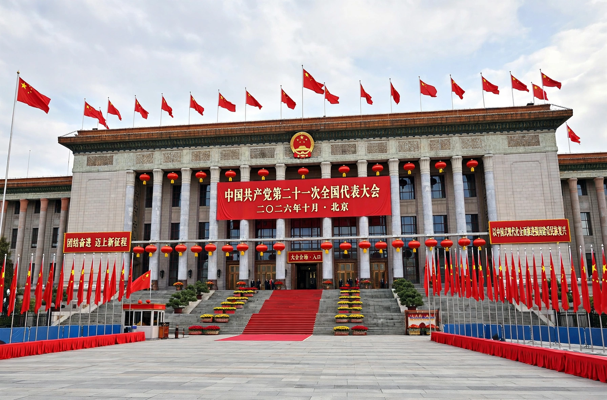

| Chinese Communist Party | |
| Founded | 23 July 1921, Shanghai (1st Congress) |
|---|---|
| Founders (key) | Chen Duxiu, Li Dazhao; Mao Zedong among early members |
| General Secretary | Xi Jinping (since 2012) |
| Membership | Roughly 98–100 million (world's largest political party) |
| Ideology | Marxism–Leninism adapted as "Socialism with Chinese characteristics"; Mao Zedong Thought; Deng Xiaoping Theory; Xi Jinping Thought |
| Headquarters | Zhongnanhai, Beijing |
| Newspaper | People's Daily (Renmin Ribao) |

The Chinese Communist Party (CCP), officially the Communist Party of China (CPC), is the founding and sole ruling party of the People's Republic of China. Founded in 1921 with assistance from the Comintern, it defeated the Nationalist Kuomintang in the Chinese Civil War and proclaimed the People's Republic in 1949. With around 98 million members, it is the largest political party in the world, and it exercises control over the Chinese state, military, and much of society through a Leninist party-state structure.
The party's first congress met secretly in Shanghai and aboard a boat on South Lake in Jiaxing in July 1921. After an early alliance with the Kuomintang collapsed in 1927, the CCP built rural soviets and survived the Long March (1934–35), during which Mao Zedong rose to leadership. War against Japan (1937–45) and renewed civil war (1946–49) ended with the Nationalists retreating to Taiwan. Under Mao, China underwent land reform, the Great Leap Forward (1958–62) — which caused a catastrophic famine — and the Cultural Revolution (1966–76). After Mao's death, Deng Xiaoping launched "reform and opening up" from 1978, introducing market mechanisms while retaining party rule; the 1989 Tiananmen Square protests were suppressed by force. Successors Jiang Zemin and Hu Jintao presided over rapid growth and WTO accession. Xi Jinping, leader since 2012, has centralized power, abolished presidential term limits in 2018, and enshrined "Xi Jinping Thought" in the party constitution.
The party is organized on democratic-centralist principles: formally, a National Congress (held every five years) elects a Central Committee, which elects a Politburo and its Standing Committee — the apex of power, typically seven members — headed by the General Secretary, who also chairs the Central Military Commission and usually serves as President of the PRC. Party committees parallel every level of government and are embedded in ministries, state firms, universities, and increasingly private companies. The People's Liberation Army is the party's armed wing, sworn to the party rather than the state.
The CCP describes its doctrine as Marxism adapted to Chinese conditions, from Mao Zedong Thought through "socialism with Chinese characteristics." In practice it combines one-party authoritarian rule with a mixed, heavily state-guided market economy, extensive censorship and surveillance, and nationalist appeals. Supporters credit the party with lifting hundreds of millions from poverty and restoring China's great-power status; critics cite human-rights abuses, including in Xinjiang, Hong Kong, and Tibet.